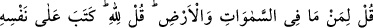
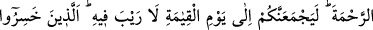
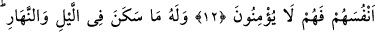
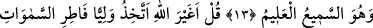
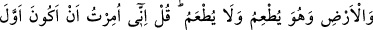
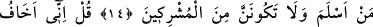
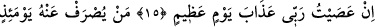
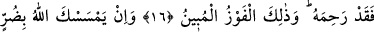
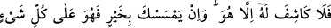
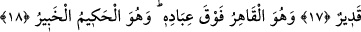

KIYAMET VE ÂHİRET
12. (Onlara) Göklerde ve yerde olanlar kimindir? diye sor. “Allah’ındır” de. O,
merhamet etmeyi kendi zatına farz kıldı. Sizi, varlığında şüphe olmayan kıyamet
gününde elbette toplayacaktır. Kendilerini ziyana sokanlar var ya işte onlar
inanmazlar.
13. Gecede ve gündüzde barınan her şey O’nundur. O her şeyi işitendir, bilendir.
14. De ki: Gökleri ve yeri yoktan var eden, yedirdiği halde yedirilmeyen
Allah’tan başkasını mı dost edineceğim! De ki: Bana müslüman olanların ilki olmam
emredildi ve sakın müşriklerden olma! (denildi).
15. De ki: Ben, Rabbim’e isyan edersem gerçekten büyük bir günün (kıyametin)
azabından korkarım.
16. O gün kim azaptan kurtarılırsa, gerçekten Allah onu esirgemiştir. İşte apaçık
kurtuluş budur.
17. Eğer Allah seni bir zarara uğratırsa, onu kendisinden başka giderecek yoktur.
Ve eğer sana bir hayır verirse, (bunu da geri alacak yoktur). Şüphesiz O her şeye
kadirdir.
18. O, kullarının üstünde her türlü tasarrufa sahiptir. O, hüküm ve hikmet
sahibidir, herşeyden haberdardır.
“De ki: “Göklerde ve yerde olanlar kimindir?” “Allah’ındır” de.” Bu soru Mekke
halkını, âlemdeki canlı, cansız, akıllı, akılsız her şeyin yaratılış, mülk ve tasarruf